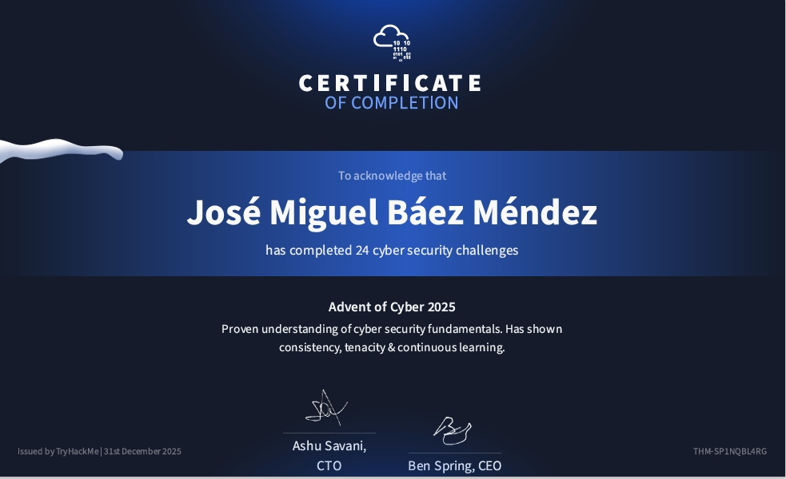
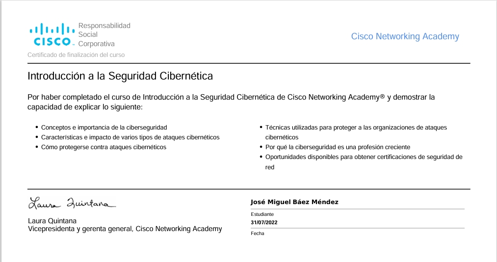
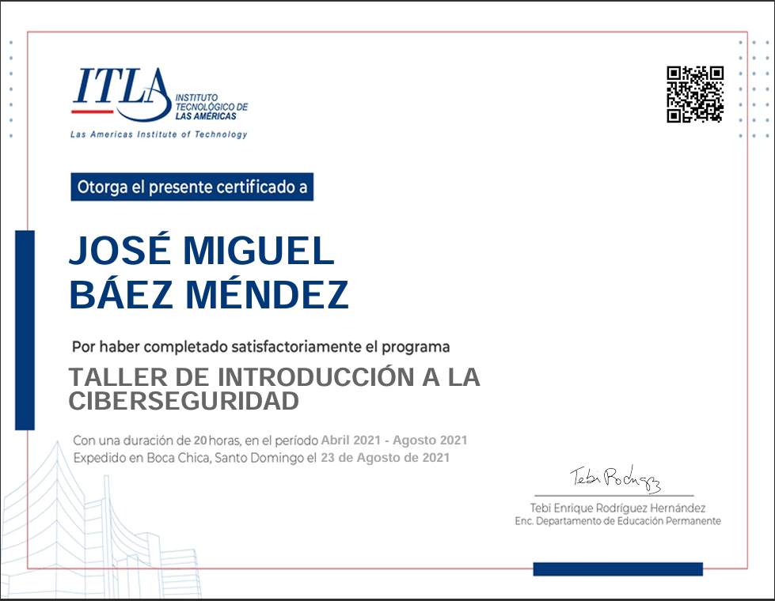
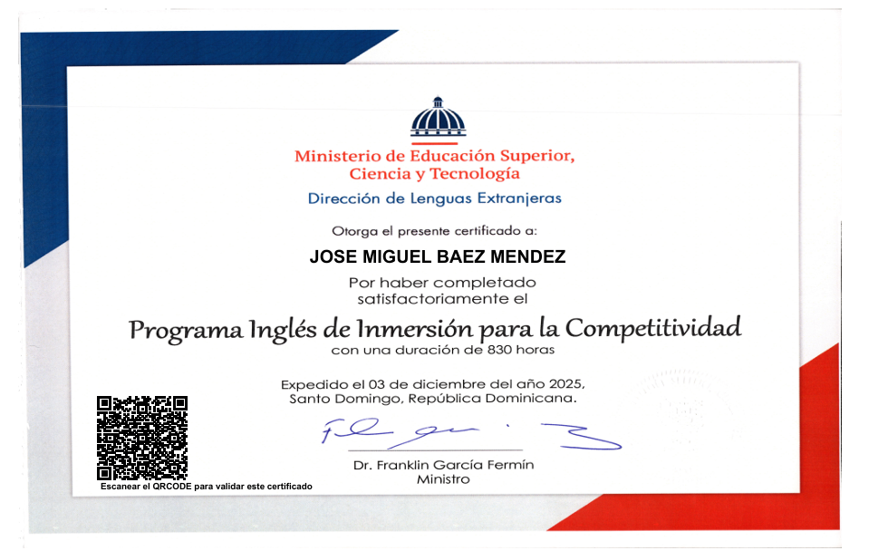
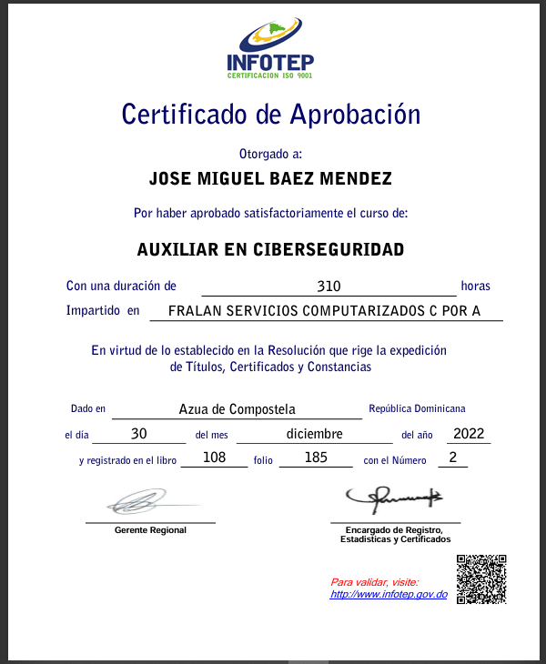
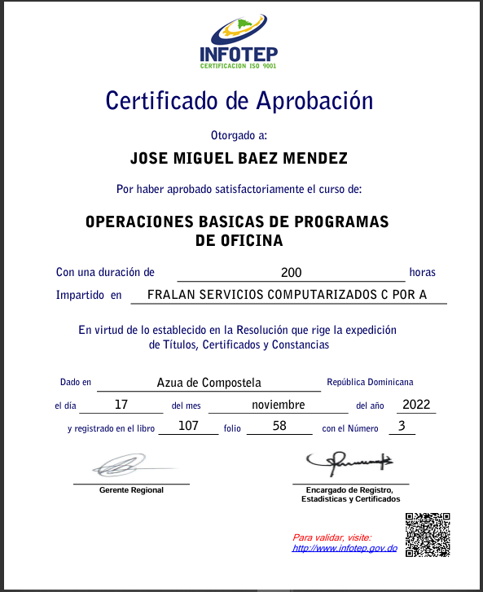
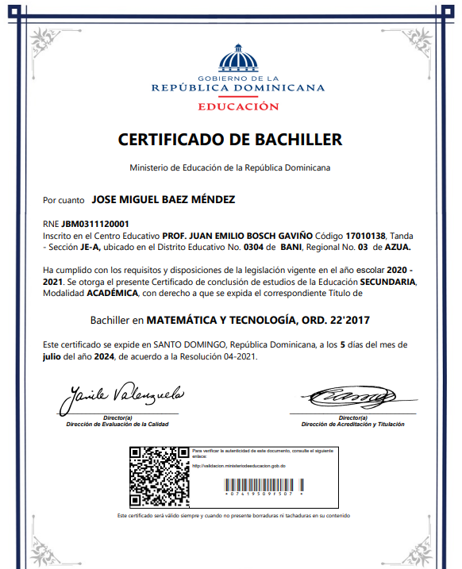

Jose Miguel Baez Mendez
Ingeniero de Sistemas y Computación
Contactame
Sobre Mi
Soy un ingeniero de sistemas apasionado por la tecnología y el desarrollo de software. Con una sólida formación en programación, redes y sistemas operativos, me esfuerzo por crear soluciones innovadoras que mejoren la vida de las personas. Mi experiencia incluye el desarrollo de aplicaciones móviles, la administración de sistemas y la configuración de redes, lo que me permite abordar desafíos técnicos con confianza y creatividad. Estoy comprometido con el aprendizaje continuo y siempre busco nuevas oportunidades para crecer profesionalmente en el campo de la ingeniería de sistemas.
Habilidades
- Administración de sistemas Linux y Windows
- Configuración de redes y seguridad informática
- Desarrollo de aplicaciones móviles con Xamarin
- Trabajo en equipo y gestión de proyectos
Certificados
Eston son los certificados que he obtenido a lo largo de mi trayectoria profesional.
Diploma de la universidad

Obtenido en 2026 tras cursar la carrera de Ingeniería de Sistemas y Computación
Certificado de Ciberseguridad

Obtenido en 2025 por completar el evento de Ciberseguridad de tryhackerme
Certificado de Introducción a la Seguridad Informática

Obtenido en 2022 por completar el curso en cisco
Certificado de Taller de Introducción a la Ciberseguridad

Obtenido en 2021 por completar el curso de Taller de Introducción a la Ciberseguridad
Certificado de English

Obtenido en 2025 por completar el curso de English
Certificado de Auxiliar en Ciberseguridad

Obtenido en 2022 por completar el curso de auxiliar en ciberseguridad
Certificado de Paquetes de Ofimática

Obtenido en 2022 por completar el curso de paquetes de ofimática
Certificado de Bachillerato

Obtenido en el año escolar 2020-2021 por completar mis estudios de bachillerato